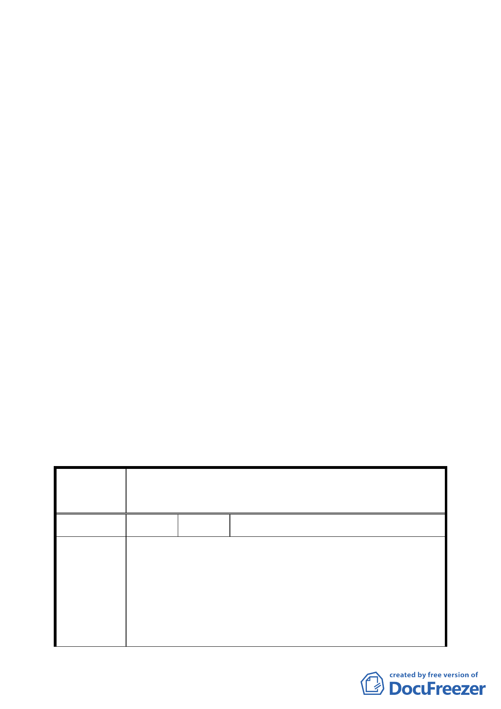

說明：
一、 本件係市府以 96 年 3 月 16 日府都規字第 09630526003 號
函送到會，並自 96 年 3 月 19 日起公開展覽三十天（說明
會日期： 96 年 4 月 4 日）。
二、 法令依據：都市計畫法第二十七條第一項第四款、文化資
產保存法第三十三條。
三、 申請單位：臺北市政府（文化局）。
四、 辦理單位：臺北市政府。
五、 計畫位置：詳計畫書第 5 頁，計畫位置及範圍圖。
六、 變更理由及內容：詳計畫書。
七、 公民或團體所提意見：2 件，詳如綜理表。
八、 市府 94 年 1 月 27 日公告指定「天母白屋（美軍宿舍）」為
市定古蹟，另公告自 94 年 5 月 25 日零時起實施禁建，禁
建期間自公告實施日起 2 年。
決議：
一、 本案依申請單位臺北市政府（文化局）本次會議所提回應
意見修正通過。
二、 公民或團體所提意見審決如後附綜理表。
臺北市都市計畫委員會 公民或團體所提意見綜理表
案名
變更臺北市士林區天母段四小段 348 等 18 筆地號土地
（天母白屋）住宅區為保存區主要計畫案
編號
陳情理由
１ 陳情人 財政部國有財產局臺灣北區辦事處
查本局經管之臺北市士林區天母段四小段 180-1、180-、
181-1、182-1 地號等 4 筆國有土地，並未位於市府 94 年 1 月
27 日府文化二字第 09406150300 號公告古蹟所定著之土地範
圍內。本處前以 95 年 12 月 21 日台財產北勘字第 0950053281
號函表示不同意在案。本案國有土地如確需辦理都市計畫變
三